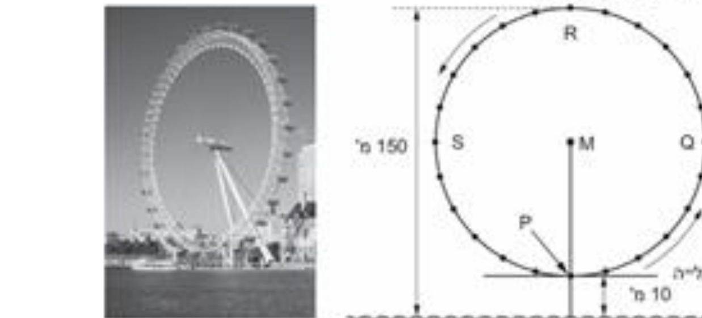

גאומטריה לכיתה ח'
81
העין של לונדון. ליד נהר התמזה בלונדון ניצב גלגל ענק ("העין של לונדון"). הקוטר החיצוני של הגלגל הוא 140 מ', והנקודה הגבוהה ביותר שלו נמצאת בגובה 150 מ' מעל פני המים. M הוא מרכז הגלגל.

- א.בכמה מטרים מעל פני המים נמצאת הנקודה M (מרכז הגלגל)?מ'
- ב.מהו אורך ההיקף של הגלגל? (היעזרו ב־π ≈ 3.14)ההיקף =מ'